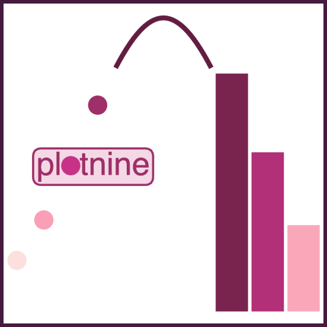
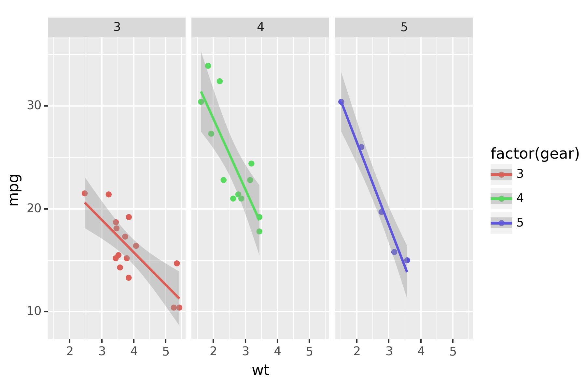

A Grammar of Graphics for Python¶
plotnine is an implementation of a grammar of graphics in Python based on ggplot2. The grammar allows you to compose plots by explicitly mapping variables in a dataframe to the visual objects that make up the plot.
Plotting with a grammar of graphics is powerful. Custom (and otherwise complex) plots are easy to think about and build incremently, while the simple plots remain simple to create.
Example¶
from plotnine import ggplot, geom_point, aes, stat_smooth, facet_wrap
from plotnine.data import mtcars
(ggplot(mtcars, aes("wt", "mpg", color="factor(gear)"))
+ geom_point()
+ stat_smooth(method="lm")
+ facet_wrap("~gear"))
